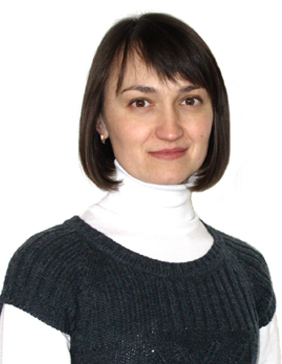

Якимишина Виктория Викторовна

Кандидат технических наук, доцент кафедры ЭПГ.


Scopus: 6504550091
Читаемые курсы:
В 1994 году закончила Донецкий государственный технический университет. Работает ассистентом кафедры с 1994 г. С декабря 2002 года по настоящее время продолжает обучение в аспирантуре ДонНТУ, параллельно работая под руководством профессора Ковалёва А.П. над диссертацией на тему “Развитие методов оценки надёжности структурно-сложных схем систем электроснабжения с учётом трёх видов отказов электрооборудования”.
Основные публикации:
- Ковалев А.П., Муха В.П., Васин А.А., Якимишина В.В. Методика расчета надежности электроснабжения узлов нагрузки с учетом трех видов отказа элементов системы // Збірник наукових праць Донецького національного технічного університету. Серія “Електротехніка і енергетика”, вип.50: Донецьк: ДонНТУ, 2002. — 910 с. (125–133).
- Ковалев А.П., Якимишина В.В., Шевченко О.А., Нагорный М.А. О пожарной безопасности сетей 6–10 кВ, снабжающих электроэнергией подземные потребители // Взрывозащищенное электрооборудование: Сб.науч.тр.УкрНИИВЭ. — Донецк: Юго-Восток, 2003. — с. 190–194.
- Белоусенко И.В., Ковалев А.П., Якимишина В.В. Оценка надежности систем электроснабжения 0,4–10 кВ газовых промыслов с учетом трех видов отказов элементов // Промышленная энергетика. — 2003. - №11. — с. 23–27.
- Ковалев А.П., Муха В.П., Якимишина В.В., Шахова Е.А. О надежности полуторных схем электрических соединений. // Наукові праці Донецького національного технічного університету. Серія: “Електротехніка і енергетика”, вип..67. Донецьк: ДонНТУ, 2003. — с. 31–33.
- Белоусенко И.В., Ершов М.С., Ковалев А.П., Якимишина В.В., Шевченко О.А. О расчете надежности систем электроснабжения газовых промыслов // Электричество. — 2004. - №3. — с. 23–28.